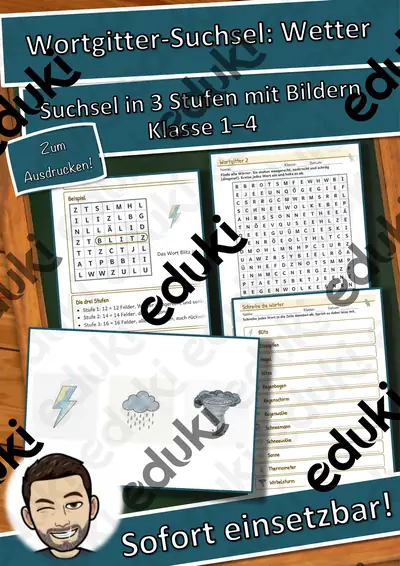

Wetter und Wettererscheinungen: Arbeitsblätter für Klasse 2–7 (Sachunterricht)
Wetterbeobachtung ist ein Klassiker, weil sie täglich neue Daten liefert. Ab der Grundschule werden Wolkenformen, Temperatur und Niederschlag erfasst, später kommen Luftdruck, Fronten und Extremwetter hinzu.
Gearbeitet wird in der Regel an Wolkenarten, Temperatur messen und Niederschlag, ergänzt um Gewitter, Wettervorhersage und Regenbogen.
Wo genau im Lehrplan das Thema steht, unterscheidet sich von Land zu Land, häufig im Fach Sachunterricht in den Klassen 2 bis 7. Gemeinsames Ziel: die Kinder lesen einfache Wetterdaten, erklären Gewitter und Regenbogen und führen ein Wetterprotokoll.
Ob Vertretungsstunde, Stationenarbeit oder Hausaufgabe: Die Arbeitsblätter zu Wetter und Wettererscheinungen lassen sich flexibel einsetzen, etwa mit Wolkenarten als Auftakt und Regenbogen als Abschluss. Musterlösungen sparen die Korrekturzeit. Leistungsstarke und schwächere Lesende erhalten über die Lesespurgeschichten Texte in drei Stufen.
Die Auswahl zum Thema umfasst derzeit 19 Titel, zum Beispiel Wortgitter-Suchsel: Wetter, Ich habe, wer hat? Wetter und Wortspiele: Sag es nicht! Wetter. Dazu zählen 4 Lesespurgeschichten und 9 Lückentexte mit Hörverstehen für Klasse 1–8. Ein Wetterprotokoll über zwei Wochen gibt eine echte Datenbasis, auf der Diagramme und Vergleiche aufbauen.
Das gehört zum Thema
Passende Arbeitsblätter und Materialpakete

Wolken, Wind und Wetter malen – Lesespurgeschichte mit Rätselaufgaben (Klasse 1)

Der Nebel – Lesespurgeschichte mit Rätselaufgaben (Klasse 8)

Das Gewitter – Lesespurgeschichte mit Rätselaufgaben (Klasse 6)

Der Regenbogen – Lesespurgeschichte mit Rätselaufgaben (Klasse 6)

Sturm Lückentext mit Wortspeicher Hörverstehen und Suchsel

Wetter Lückentext mit Wortspeicher Hörverstehen und Suchsel

Tornado Lückentext mit Wortspeicher Hörverstehen und Suchsel

Regenbogen Lückentext mit Wortspeicher Hörverstehen und Suchsel

Gewitter Lückentext mit Wortspeicher Hörverstehen und Suchsel

Nebel Lückentext mit Wortspeicher Hörverstehen und Suchsel

Dürre Lückentext mit Wortspeicher Hörverstehen und Suchsel

Tornado Lückentext mit Wortspeicher - Naturkatastrophe

Hurrikan Lückentext mit Wortspeicher - Naturkatastrophe

Wortgitter-Suchsel: Wetter – Wortgitter – Klasse 1–4

Ich habe, wer hat? Wetter – Lese-Schleifen – Klasse 1–4

Wortspiele: Sag es nicht! Wetter – Klasse 2–4

Sprechanlässe: Wetter – Sprechanlässe – Klasse 1–4

Lesen, Malen und Kleben: Wetter – Lesen und Malen – Klasse 1–4

Hörwerkstatt Geräusche: Geräusche in Natur und Wetter – Hörstation, 3 Stufen & Test (Klasse 2–4)
Häufige Fragen
Für welche Klassenstufe passen die Arbeitsblätter zu Wetter und Wettererscheinungen?
Der Schwerpunkt liegt auf Klasse 6; insgesamt deckt die Auswahl (19 Titel) Klasse 1–8 ab. In der Beschreibung jedes Materials steht die empfohlene Stufe.
Welche Inhalte decken die Materialien zu Wetter und Wettererscheinungen ab?
Inhaltlich reicht die Auswahl von Wolkenarten über Temperatur messen und Niederschlag bis zu Wettervorhersage; Details stehen bei den einzelnen Materialien.
Wie setze ich Wetter und Wettererscheinungen im Unterricht ein?
Ein Wetterprotokoll über zwei Wochen gibt eine echte Datenbasis, auf der Diagramme und Vergleiche aufbauen. So entsteht aus den Blättern eine kleine Einheit, die sich auf zwei bis drei Stunden verteilen lässt.
Mehr Material nach Fach und Klasse
- Alle Materialien Deutsch
- Arbeitsblätter Deutsch Klasse 2
- Arbeitsblätter Deutsch Klasse 3
- Arbeitsblätter Deutsch Klasse 4
- Arbeitsblätter Deutsch Klasse 5
- Arbeitsblätter Deutsch Klasse 6
- Arbeitsblätter Deutsch Klasse 7
- Unterrichtsmaterial Klasse 2
- Unterrichtsmaterial Klasse 3
- Unterrichtsmaterial Klasse 4
- Unterrichtsmaterial Klasse 5
- Unterrichtsmaterial Klasse 6
- Unterrichtsmaterial Klasse 7
Verwandte Lehrplanthemen
- Bauernhof und Nutztiere (Sachunterricht, Klasse 1–4)
- Berufe und Berufswahl (Sachunterricht, Klasse 1–10)
- Dinosaurier und Urzeit (Sachunterricht, Klasse 1–5)
- Geld und Konsum (Sachunterricht, Klasse 2–10)
- Gesunde Ernährung (Sachunterricht, Klasse 1–8)